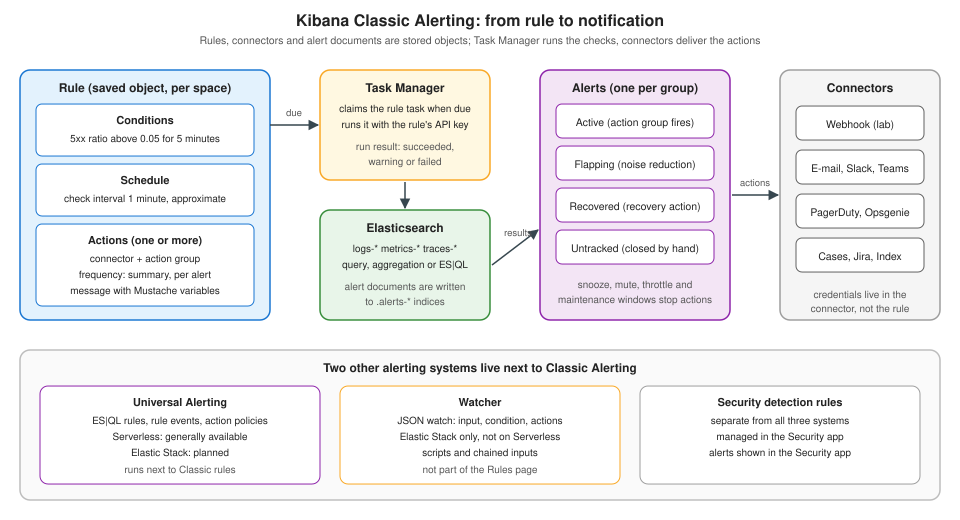

Kibana: Alerting Overview
|
This content was generated with the assistance of AI and should be verified against the official documentation before being relied on in production. |
Checked on 2026-11-09 against Kibana 9.5.x.
Dashboards show the state of a system when somebody looks; alerts make the system call somebody when nobody is looking. Kibana has more than one way to do that, and the first decision, before any rule is written, is which alerting system to use. This page answers that decision for the Elastic Stack 9.5, explains the model that the rest of the Kibana alerting pages build on (a rule with conditions, a schedule and actions, which creates alerts that run actions through connectors), and ends with the five alerts of the Bookshelf lab and the page that builds each one.
The tool-neutral ideas (evaluation versus notification, states, grouping, flapping, silences) are explained once on Alerting Fundamentals; this page is their Kibana implementation. The Grafana counterpart is Grafana: Alerting Architecture.
Source: Alerting in the Elastic documentation.
Three alerting systems
Elastic documents three systems that watch data and notify people. They are not versions of one another: they overlap in purpose, and the first rule of choosing is to look at what your deployment type offers.
| System | Availability | Rule is defined by | Typical use |
|---|---|---|---|
Kibana Classic Alerting |
Generally available on Elastic Cloud Serverless and on the Elastic Stack |
Choosing a rule type and filling in its parameters in a form; no query language is needed |
Monitoring metrics, logs and uptime with the built-in rule types of Observability and Stack Rules, with notifications configured per action |
Kibana Universal Alerting |
Generally available on Serverless; planned for the Elastic Stack |
An ES|QL query (or a form-based builder); matches are recorded as rule events that can be queried in Discover |
Teams that want control over what data accompanies a detection and over routing, grouping and throttling across rules through action policies |
Watcher |
Generally available on the Elastic Stack; unavailable on Serverless |
A JSON watch definition (input, condition, actions) sent to the Elasticsearch API |
Highly custom logic that needs scripts or chained inputs; it does not use the Rules page |
Source: Compare alerting systems.
The comparison page adds the differences that matter once rules exist. Classic Alerting updates an alert in place and offers limited querying of the history; Universal Alerting appends rule events that ES\|QL can query; Watcher writes to a watch history index. Classic notifications are configured per action on each rule, Universal notifications go through reusable action policies with throttling and conditions, and Watcher has action-level throttling and conditions. For noise reduction Classic Alerting offers snooze per rule or per alert plus maintenance windows, Universal Alerting adds acknowledge or deactivate per alert, per-series snooze and routing by match condition in the action policies, and Watcher relies on conditions and throttling.
For Bookshelf on a self-managed Elastic Stack 9.5 the choice is made by availability: Classic Alerting is the only system of the three that is both generally available and form based, Universal Alerting is not yet available on the Stack, and Watcher is reserved for logic that rules cannot express. Universal Alerting and Watcher are covered on Universal Alerting & Watcher; the rest of this section uses Classic Alerting. Classic and Universal Alerting run side by side, so existing Classic rules are not affected if Universal Alerting becomes available on the Stack and a team migrates gradually.
Elastic Security has its own detection rules, which are separate from all three systems: they are created, managed and triaged in the Security app and their alerts appear there, not on the Observability Alerts page. They are out of scope for this section.
The Classic model
The Classic documentation describes a rule as three parts: conditions, a schedule and actions. The example on the page is a server-monitoring rule that checks whether average CPU is above 0.9 over the last two minutes, runs every minute and sends a warning e-mail with a templated subject.

Conditions. Every rule type defines its own conditions. A common pattern is a series of clauses; the Elasticsearch query rule, for example, takes an index or data view, a query and a threshold on a metric aggregation (count, average, maximum, minimum or sum). The rule types are listed on Rules & Stack Rule Types and Observability Rules.
Schedule. Every rule has a check interval that says how often the conditions are evaluated. Checks are queued and run as close to the interval as capacity allows, and the documentation is explicit that Kibana intervals are approximate: timing depends on how often Task Manager claims tasks and on the load of the other tasks on the system. Task Manager is the background-job service of Kibana that also runs reports and other jobs (Architecture & the Elastic Stack); sizing and tuning it for many rules is the subject of Alerting Setup, Security & Scaling.
Actions. A rule has one or more actions. An action needs a connector (the saved credentials and endpoint of an e-mail server, chat app, webhook or on-call tool), an action frequency and a mapping from rule values to the properties of the notification. Recovery actions run when the conditions are no longer met, and a connector may support different actions per action group, for example one action that opens an Opsgenie alert for the group of the firing condition and a second that closes it for the recovery group. Some rule types let you further limit when an action runs, to a time frame or to alerts matching a KQL query. The details are on Actions, Frequency & Action Variables and Connectors.
Source: Kibana Classic Alerting.
Alerts: one per occurrence
Kibana tracks each occurrence of a condition as a separate alert. In the server example each server above the threshold gets its own
alert, and each sends its own e-mail when its status changes. For rules that group (by service.name, by host, by route), one alert
exists per group, which is the Kibana counterpart of the alert instance per series that Grafana keeps. The documented alert
statuses are active, flapping, recovered and untracked; "pending" does not exist for Classic rules, so waiting before alerting
is configured with the consecutive-runs setting (the alert_delay property in the API) rather than as a state. Flapping detection,
which is on by default, marks an alert that changes status too often (for example six changes in the last ten runs) so that
notifications can be reduced; since 9.3 it can be set per rule and per space.
Alert documents are written to .alerts-* indices, which is why reading them needs index privileges
(Spaces, Roles & Privileges), and why the alert history can
be queried in Discover and shown in dashboards through the Alerts panel
(Maps, Vega & Other Panels).
Sources: Create and manage rules (flapping, statuses on the rule details page) and Create and manage rules for Elastic Observability (per-rule flapping since 9.3).
From rule run to notification
The documentation describes the flow in four steps, which is also the order to debug in when a notification does not arrive:
-
A rule’s conditions are met and alerts are created.
-
Each alert creates actions according to the action frequency, unless it is snoozed, muted or throttled. The templates are filled with real values.
-
Kibana runs the actions through a third-party integration such as an e-mail service.
-
The credentials or connection parameters come from the connector.
An action can therefore be missing for four distinct reasons that look the same to a person waiting for a message: the conditions were
never met, the alert exists but the frequency did not call for an action yet, a snooze, mute, throttle or maintenance window
suppressed it, or the connector failed. The rule’s details page distinguishes the first from the others: it lists each alert with its
status and duration, the Last response column of the Rules list shows the rule’s run result (succeeded, warning or failed),
and the History tab shows failed actions.
Action frequency is the main lever against noise. Per-alert actions can run on each check interval, only when the alert status changes or on a custom interval; summary actions list new, ongoing and recovered alerts on a check or custom interval where the rule type supports them. Without a summary or a status-change frequency a rule can send a notification at every check for as long as the condition holds, which the documentation warns against and which is the most common reason a Classic rule gets muted by the people it was meant to help. Suppression tools (snooze, per-alert snooze, acknowledge, maintenance windows) are on Alert Lifecycle, Snooze & Maintenance Windows.
Where rules and alerts appear
All rules live on one Rules page: Stack Management, Alerts and insights, Rules, or the global search. Since Kibana 9.4 the Manage rules links in Observability, Discover and Stack Monitoring open this same page, so a rule of any type appears in one list whichever app owns it (the unified Rules list is generally available on the Stack since 9.4 and on Serverless). Rules can be created there or from type-specific entry points that pre-fill fields, such as the Alerts and rules menu on the APM pages or the Create new SLO burn rate alert rule checkbox when creating an SLO.
Alerts are surfaced in several places and the place depends on the rule type:
-
the Observability Alerts page, with a table of the alerts of the selected time frame (status, last updated, reason), filters and a KQL bar; it lists Observability alerts and, since 9.5 on the Stack, machine learning anomaly detection and Stack Management alerts for users who have the matching feature privileges;
-
the rule details page, which lists the alerts of one rule;
-
the alert details page, with an investigation guide tab (Markdown, generally available on the Stack since 9.1) and related dashboards;
-
the app that owns the rule type: the rule type catalogue notes that alerts of Observability and Security rules appear only in the Observability and Security apps, not under Stack Management;
-
the Alerts dashboard panel, for putting alerts next to the metrics that explain them.
Stack Monitoring rules are created automatically and cannot be managed through saved objects, and Security rules are imported and exported through the Security UI.
Sources: Alerting for Elastic Observability and Rule types.
Who may do what
Creating a rule needs feature privileges for the app that owns the rule type (Observability for Observability rules, Machine Learning for
anomaly detection rules, Management Stack Rules for the generic rules) on the Stack, and the Editor role or higher on Serverless.
Viewing alerts and acting on single alerts (snooze, unsnooze, acknowledge) is a separate privilege, Stack Alerts or Observability
Alerts, set to all or read. Rules run in the background with an API key that captures the privileges of the user who last saved
them, which is why a rule can stop working when its last editor lacks index privileges on the data it queries. Self-managed
installations also need an encryption key and server.publicBaseUrl before alerting is useful. All of this is detailed on
Spaces, Roles & Privileges and
Alerting Setup, Security & Scaling.
Kibana and Grafana side by side
Readers who know Grafana alerting can map the concepts directly, with one structural difference: Grafana separates the evaluating machine from a routing tree of notification policies keyed on labels, while Classic Kibana rules carry their notifications with them, as actions.
| Concept | Grafana | Kibana Classic Alerting |
|---|---|---|
The thing that is evaluated |
Alert rule (query, expressions, condition) in a folder and evaluation group |
Rule of a rule type, in a space; the check interval is a property of the rule |
One instance of a condition |
Alert instance per label set, with states Normal, Pending, Alerting, Recovering, No Data, Error |
Alert per group, with statuses active, flapping, recovered and untracked; waiting is the consecutive-runs setting |
Where the notification is decided |
Notification policy tree: matchers on labels, grouping, group wait, group interval, repeat interval |
Per-rule actions: action group, frequency (every run, on status change, custom interval) and summary or per-alert mode |
Where the endpoint lives |
Contact point |
Connector |
Message templates |
Go templates ( |
Mustache variables ( |
Temporary quiet |
Silence, mute timing |
Rule or alert snooze, maintenance window |
Handling missing data |
No Data and Error states with their own handling options |
Rule-type specific: for example the no-data options of the custom threshold rule |
Because Kibana has no label-based routing tree, the way to route the five Bookshelf alerts to different destinations is to give each rule its own action groups and connectors (or, on Serverless, Universal Alerting action policies). That is also why Classic rules are tagged consistently: tags make the Rules list filterable, but they do not route. The Grafana side is in Grafana: Notification Policies and Grafana: Contact Points & Integrations.
The Bookshelf alerts in Kibana
The lab ships five alerts in Grafana and the same five in Kibana. Each is a symptom the user can feel, in line with
Designing Actionable Alerts. All rules live in the bookshelf
space, carry the tag bookshelf and the owning team bookshelf-sre, and send to the webhook connector that posts to
http://webhook-receiver:8080/kibana.
| Alert | Condition | Rule type | Built on |
|---|---|---|---|
High 5xx ratio |
ratio of 5xx responses to all responses above 0.05 over 5 minutes |
Custom threshold, two count aggregations and an equation |
|
p95 latency above SLO |
95th percentile latency above 0.5 s (500 ms) over 5 minutes |
APM latency threshold, aggregation 95th percentile |
|
No data |
no telemetry from the |
Custom threshold with the no-data option |
|
Error-log spike |
more than 20 ERROR log lines in 5 minutes |
Elasticsearch query rule (KQL on the log data view, count above 20) |
|
SLO burn rate |
budget of the 99.5 percent availability SLO burning at 14.4 times or more |
SLO burn rate |
The notifications they send, their frequency and variables are designed on Actions, Frequency & Action Variables, and the whole chain is exercised on Bookshelf End to End.
What can go wrong
-
Choosing the wrong system for the deployment: Universal Alerting is generally available on Serverless but planned on the Stack, and Watcher does not exist on Serverless, so documentation for one is not a recipe for the other. The Universal Alerting pages say that their APIs and instructions do not apply to Classic Alerting.
-
Expecting exact timing: a one-minute check interval is a target, not a guarantee, and a busy Task Manager delays rules.
-
A rule that runs but never notifies: no connector on the action (a rule created automatically with an SLO has no connector until one is added), a frequency that has not triggered, or a snooze or maintenance window.
-
A rule that suddenly fails after an edit: the API key now carries the privileges of the user who saved it last.
-
Looking for Stack Management alerts in the Observability app, or the reverse: alerts appear in the app that owns the rule type.
-
Assuming a Grafana-style pending state: Classic rules have none; use consecutive runs.
Verify it in the lab
-
Start the
kibanaprofile (docker compose --profile kibana up -d) and openhttp://localhost:5601; check that Kibana is up withcurl -s -u elastic:"$ELASTIC_PASSWORD" http://localhost:5601/api/status. -
Open Stack Management, Alerts and insights, Rules in the
bookshelfspace (http://localhost:5601/s/bookshelf/app/management/insightsAndAlerting/triggersActions/rules). The list is empty until the next pages create the rules; the same page is reached from Manage rules in the Observability app. -
List the rule types that the space offers, with their action groups and variables, and keep the output for the next pages:
curl -s -u elastic:"$ELASTIC_PASSWORD" "http://localhost:5601/s/bookshelf/api/alerting/rule_types". -
Check the alerting subsystem:
curl -s -u elastic:"$ELASTIC_PASSWORD" http://localhost:5601/s/bookshelf/api/alerting/_healthreturns whether decryption and execution are healthy (the encryption key must be configured, see Installation & Configuration).
Reference: Get the rule types and Get the alerting framework health.
In the books
Shah’s Kibana 8.x: A Quick Start Guide to Data Analysis (Packt, 2024) introduces alerting through machine learning rules: it creates a rule for an anomaly detection job from Stack Management, Alerts and Insights, Rules, and then creates a connector so that the rule has an action to run. That sequence (rule first, connector second) still describes the Classic model, but the book describes only the Kibana 8 menus and screenshots; in 9.x the Rules page is the single unified list, the Observability alert types appear next to the Stack rule types, flapping can be tuned per rule, and Universal Alerting and Watcher are separate systems. The Watcher user interface that older Elasticsearch books describe, for example Paro’s Elasticsearch 7.0 Cookbook (Packt), is the legacy path for new work.
Where to go next
-
Rules & Stack Rule Types creates and manages rules and covers the Elasticsearch query, index threshold, tracking containment and transform health rules.
-
Observability Rules builds the Bookshelf rules.
-
Actions, Frequency & Action Variables and Connectors make them notify.
-
Universal Alerting & Watcher covers the other two systems.
-
Kibana is the section index.